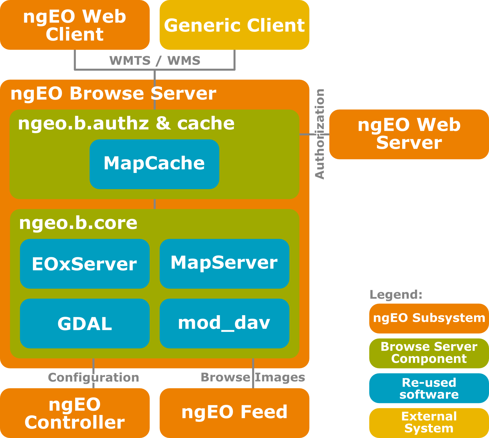

ngEO Browse Server
Stephan Meißl stephan.meissl@eox.at @Schpidi
ngEO Task4 DDR-V2 Madrid 2013-11-20

This work is licensed under a Creative Commons Attribution 3.0 Unported License.
ngEO Architecture
BROW Architecture
Flow of Browse Images

Ingestion of Browse Images
Preprocessing
- Input Geographic Metadata for Geo-referencing
- Footprint polygon - footprint
- Regular grid of tiepoints - regularGrid
- Pre-georeferenced images
- rectifiedBrowse
- modelInGeotiff
- Optimizations
- Footprint generation
- Re-projection
- Addition of alpha-channel
- Internal tilling
- Overviews
- Compression
Retrieval of Browse Images
BROW Components
BROW Component Core
BROW Core Data Model
Technology Baseline
- CentOS 6 64bit repositories (base, extras, updates) based on RHEL 6
- Apache HTTP server 2.2: httpd, mod_wsgi
- PostgreSQL 8.4: postgresql-server, postgresql
- Python 2.6: python, python-lxml, python-psycopg2, pytz
- EPEL & ELGIS repositories
- Django 1.4: Django14
- PROJ.4 4.8: proj
- GDAL 1.9: gdal, gdal-python
- PostGIS 1.5: postgis
- EOX repository
- libxml2 2.7: libxml2, libxml2-python - GML patch
- MapServer 6.2: mapserver, mapserver-python - 6.0 otherwise
- MapCache 1.2; 1.3dev: mapcache
- EOxServer 0.3.1; 0.3dev: EOxServer
- ngeo.b.core 1.0.2; 2.0dev: ngEO_Browse_Server
Development & Testing
- Git hosted on GitHub
- Vagrant & VirtualBox (see HOWTO)
- Jenkins CI
- Python/Django unit test framework
- Performance tests using JMeter
- Integration testing on OpenStack platform provided by Task 5
BROW Deployment Basic
BROW Deployment Multiple
BROW Deployment Alternative
BROW Installation
Changes
- Tile merging limit per tile instead of per browse layer (demo)
- Merge images during ingestion (S1)
- Asynchronous seeding
- Faster synchronous part for FEED
- Synchronization between BROW components/Consistency checks
- Improved performance in case of merging
- Delay in availability on WEBC
Security
- Authentication using Shibboleth
- BROW Deployment Recommendation
- Separate instances for Open and Protected browse layers
- Pro: Far easier configuration of Shibboleth e.g. redirects
- Con : Small operations overhead
- Authorization
- Alternative 1: ngEO-CP
- Harmonization in ngEO
- Depending on design and implementation
- Alternative 2: BROW Custom
- Middleware in MapCache calling simple tool using memcached to obtain decision
Communication with CTRL
- Done
- Register/Unregister
- Status
- Log
- To be done
- Global and specific configuration
- Pause/Resume/Stop/Restart
- Notifications
- Reporting
Status
- V1
- Finished 6 months ago
- Waiting for final closure
- V2
- Finished sprint 1 and parts of 2
- Continued once V1 is closed
- Sidestep Task 5
- ngEO-MM Reference Platform
- Current status
- Datasets: Landsat TM & ERS
- Issues reported to Jira e.g. NGEO-926, NGEO-927, NGEO-928, NGEO-940
OSGeo's FOSS4G 2014
Presentation: ESA User Services powered by Open Source
Live Demonstration
Thank you for your Attention
Stephan Meißl stephan.meissl@eox.at @Schpidi
ngEO Task4 DDR-V2 Madrid 2013-11-20
This work is licensed under a Creative Commons Attribution 3.0 Unported License.